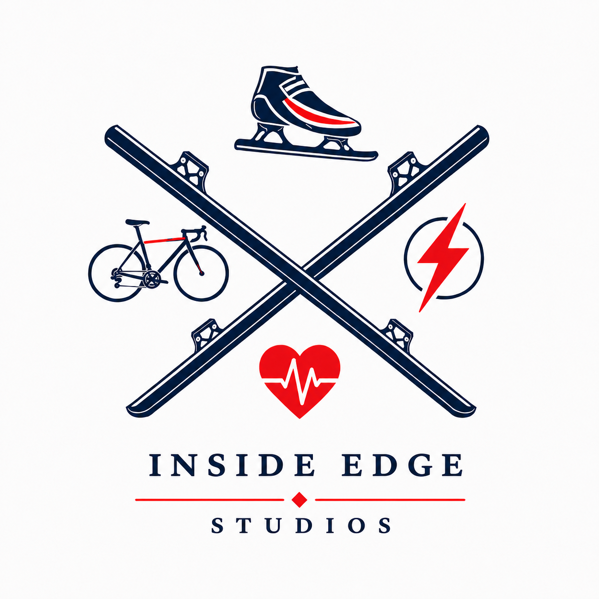
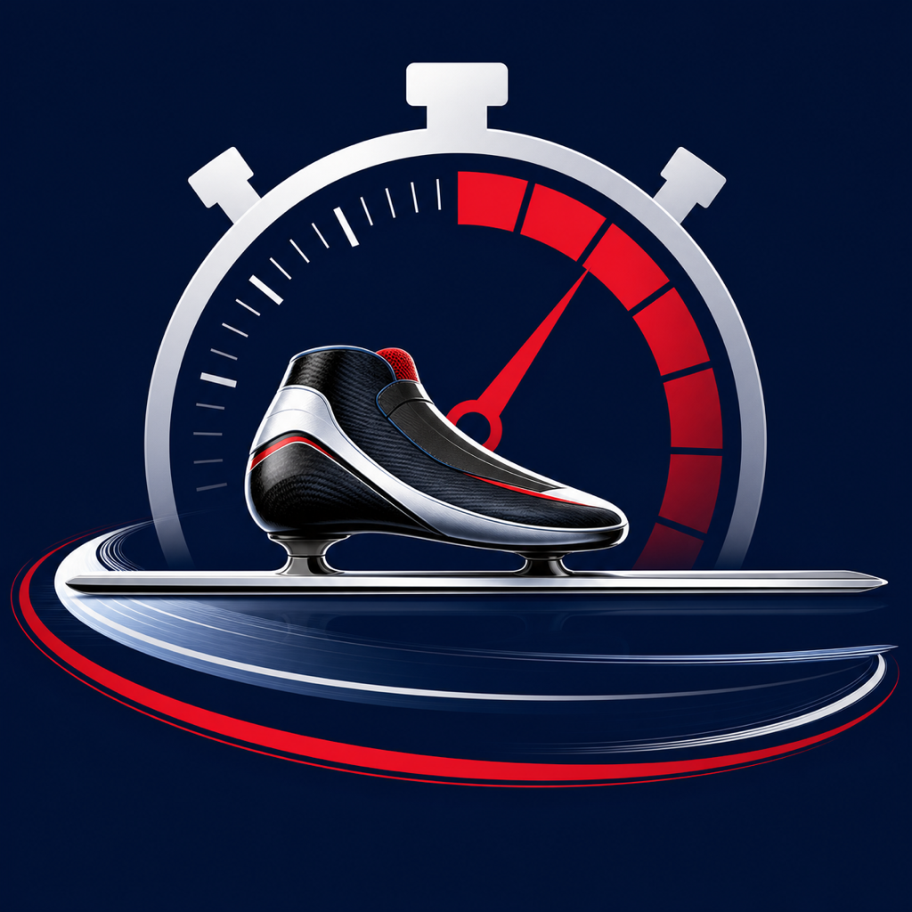
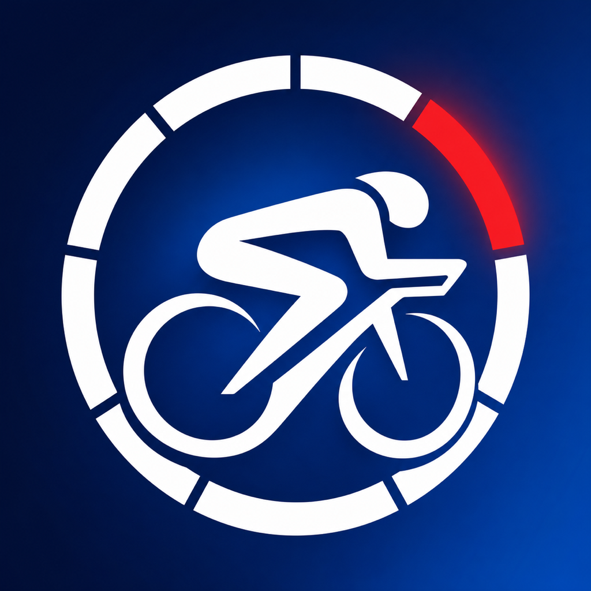

Independent app studio
Specialist thinking. Useful apps.
Inside Edge Studios turns practical experience into focused iPhone and iPad tools for athletes, coaches, sport officials and people who simply want technology to do its job clearly.

Our apps
Different disciplines. One clear philosophy.
Each app has a dedicated product home, support information and a plain-language privacy policy.

Intervals · Splits · Race timing
Inside Edge Timing
A specialist timing toolkit for structured interval sessions, coaching splits and race finish-order recording, built from short track speed skating and useful across sport.
Version 1.0 (4)
Cycling training
Inside Edge Ride
Training zones, smart-trainer control and practical ride guidance in one focused cycling app.
The studio approach
Built from the inside edge.
Our apps begin with a specific problem, a real environment and the people who need to make decisions there. That might be a coach timing athletes at rinkside, a rider trying to understand training intensity or a traveller who needs one reliable answer quickly.
We favour purposeful features, strong visual hierarchy and transparent explanations over unnecessary complexity. The result is software intended to feel useful from the first screen.